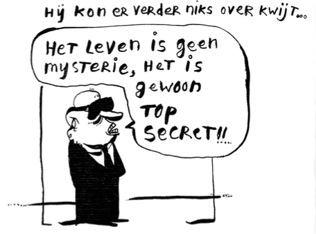
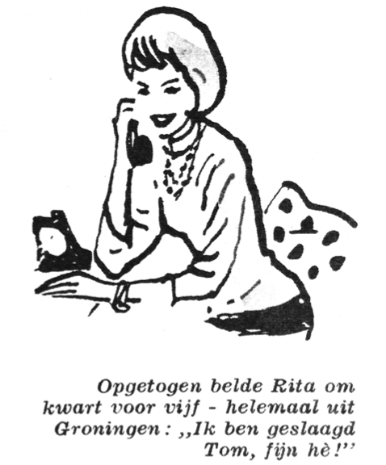

IS ER TOEKOMST VOOR DUURZAME ENERGIE?
Als student Innovation Science ziet Ricco het mis gaan: overheden zijn te weinig daadkrachtig als het gaat om innovatiebeleid. “Ze hebben geen idee waar ze heen moeten sturen in de huidige energiecrisis.” Ricco benadrukt dat de tijd dringt: “Er moeten nu knopen worden doorgehakt. Er wordt veel te veel getwijfeld omdat er zo veel verschillende mogelijkheden zijn. Wordt het kernenergie of kiezen we voor duurzaam? Of moeten we ons behelpen met kolen?” Hoewel elke keus sowieso beter is dan de huidige besluiteloze situatie, is hij geen voorstander van kernenergie: “Ik denk dat dat op lange termijn niet de oplossing is.

Toekomstige generatie schepen we op met afval waarvan we nu al geen idee hebben wat we er mee moeten.” Zijn vriend Tomas, student Sustainable Energy Technology, ziet dat anders: “Ik vrees dat we geen keus hebben, want we zijn al veel te laat.” Ricco: “Dat geloof ik niet, er is absoluut toekomst voor duurzame energie. Het wachten is op het kritische punt waarop er veel vraag komt naar zonnecellen en windmolens, omdat de olie nu eenmaal te duur is.” Tomas: “Inderdaad, er is toekomst voor duurzame energie, natuurlijk. Maar voorlopig niet.” Ricco: “Jij ziet kernenergie als transitie?” Tomas: “Precies, ondertussen moeten de ontwikkelingen doorgaan.” Ricco: “Ik zie liever meteen schone energie.” Tomas: “Dan hadden we daar vijftig jaar geleden mee moeten beginnen.” Ricco: “Dat is achterafgelul.” Tomas: “Helemaal niet. In 1969 was er een conferentie in Rio de Janeiro en toen hebben ze precies in kaart gebracht wat het probleem is. Alles is aangestipt, maar er is niets mee gedaan.” Ricco: “Vanwege de olielobby?” Tomas: “Precies. Zij wilden geld verdienen en de mensen keken niet verder dan hun neus lang was. Dat is het probleem: mensen leven te veel in het nu. Dat was toen ook al.”
POLITIESTAGE
Politieagenten lopen al vanaf hun eerste jaar stage. Ze hebben dan al gelijk alle bevoegdheden van een volleerde politieagent. De stage bestaat vooral uit surveilleren, soms samen met een ervaren politieagent, maar ook best alleen.
Tien jaar geleden liepen politieleerlingen pas in hun 2e of 3e jaar stage. Naar dat systeem gaan we vanaf volgend jaar terug.
Geruchten dat de stages van politieagenten in het buitenland beter zijn, kunnen we niet bevestigen. Er worden ook geen Nederlandse politiestagaires in het buitenland op stage gestuurd.
Wel is er een politiemissie van Nederlandse politie-instructeurs naar Afganistan. “Daar kun je soms met een heel klein beetje kennis het niveau al enorm omhoog helpen” zegt een expert. Afgaanse politieagenten gaan
trouwens niet op stage.

NIET AANVALLEN, MAAR AANVOELEN
‘Als je een discussie wil winnen, dan moet je hem niet aangaan.’ Dat is de les die dhr. Nebbeling, trainer bij ROC Mondriaan, zijn pupillen meegeeft. ‘Tijdens de workshop “Agressie moet je doen” had de docent het de hele tijd over het belang van goed kunnen argumenteren, maar daar geloof ik niet zo in. De argumenten van een handhaver zijn namelijk per definitie anders dan die van de agressor. Het gaat er daarom om dat je begrip toont voor de agressor: “Meneer, ik begrijp dat u dat bushokje in elkaar timmert.”
En dan niet een “maar” daar achteraan, want dan doe je alles weer teniet. Dus liever: “Ik begrijp dat u dat bushokje in elkaar timmert, want er is hier heel weinig te doen, er zijn inderdaad geen leuke plekken om te ontspannen.”
Alleen op zo’n manier kan je echt deëscalerend werken. Ik zeg altijd: je moet niet aanvallen, maar aanvoelen.’
RETIFICATIE [DE WAAN, NR. 50, VERKORTEOPLEIDING]
Han (49) wist te vertellen dat de opleiding HTVP helemaal niet een jaar korter duurt. De studenten krijgen een jaar vooropleiding, bij de politieacademie krijgen ze vervolgens vrijstelling.
Ook leidt de verkorte opleiding niet tot meer bureaucratie. De gemeentes bepalen waar de politie haar tijd aan besteedt en niet, zoals Erik (53) beweerde, de kwaliteit van de opleiding.
LUNCH DREIGT TE ESCALEREN
Hoewel de koffiedame bij het klaar-zetten van de koffie en broodjes nog niet vermoedde dat de lunch enkele minuten op een veldslag uit zou lopen, erkende zij wel dat er een duidelijke risicofactor speelde: er zou namelijk sprake zijn van een limiet van één broodje per persoon. Mocht het scenario zich voordoen dat daarop gereageerd wordt door te stellen dat men ‘op één broodje niet kan leven’, dan zou zij daar haar antwoord op klaar hebben: ‘Maar er is ook nog